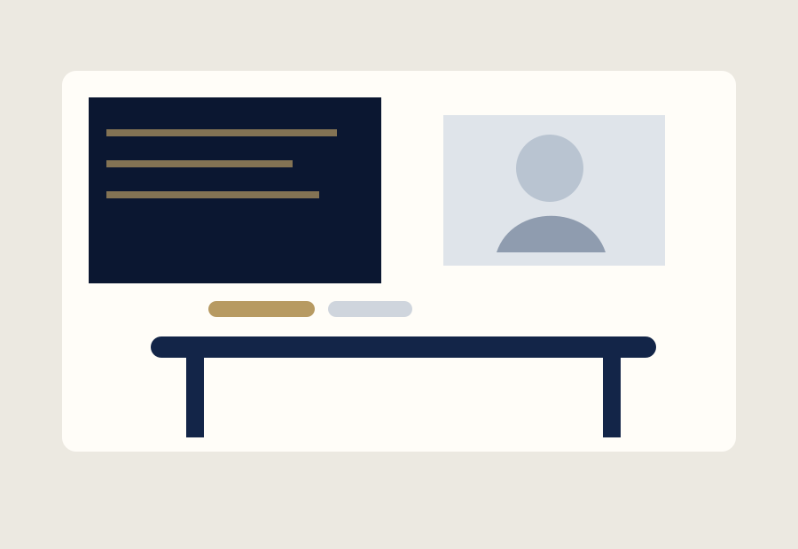

진단 없는 반복은 줄입니다.
성적표 하나만으로 학습 방향을 정하지 않습니다. 개념 이해, 문제 접근, 시간 사용, 반복되는 오답까지 확인해 학습의 시작점을 찾습니다.
아르케는 ‘많이 시키는 수업’보다 ‘왜 막히는지 찾고 다음 학습을 설계하는 과정’을 중요하게 생각하는 가상 입시 전문학원 브랜드입니다.
성적표 하나만으로 학습 방향을 정하지 않습니다. 개념 이해, 문제 접근, 시간 사용, 반복되는 오답까지 확인해 학습의 시작점을 찾습니다.
수업에서 배운 내용이 과제와 테스트에 이어지고, 테스트 결과가 다시 다음 수업과 보완 학습으로 연결되도록 한 주를 설계합니다.
단순히 “올랐다”는 결과만 전달하기보다 어떤 학습 행동이 바뀌었고 무엇을 더 보완해야 하는지 학생과 학부모가 이해하도록 돕습니다.
학년과 성적대뿐 아니라 취약 개념과 문제 접근 습관을 확인합니다.
목표와 현재 수준에 맞게 학습 난도와 주간 학습량을 조정합니다.
배운 내용을 바로 확인하고 단순 점수보다 오답 유형을 분석합니다.
성취도, 수행률, 취약 영역의 변화를 누적해 학습 방향을 조정합니다.
학생이 이번 주 무엇을 고쳐야 하는지 구체적인 행동으로 안내합니다.
학습 상태와 다음 목표를 정기적인 리포트 형태로 공유합니다.
실제 사진 대신 포트폴리오에서 사용할 수 있는 자체 제작 벡터 비주얼로 수업 공간과 1:1 피드백 장면의 방향을 보여줍니다.

실제 영업장 정보가 아닌 VELTOWEB 포트폴리오 데모용 설정입니다.